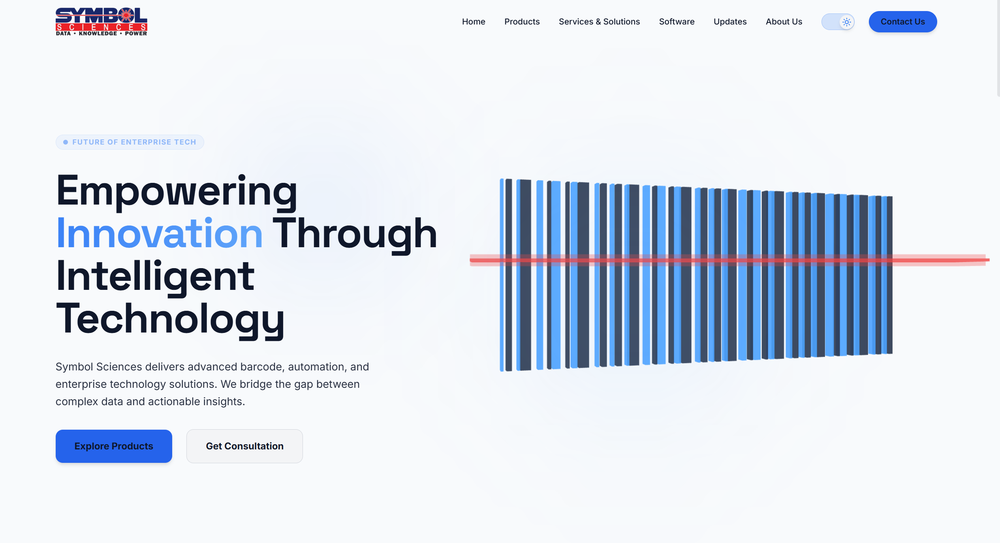
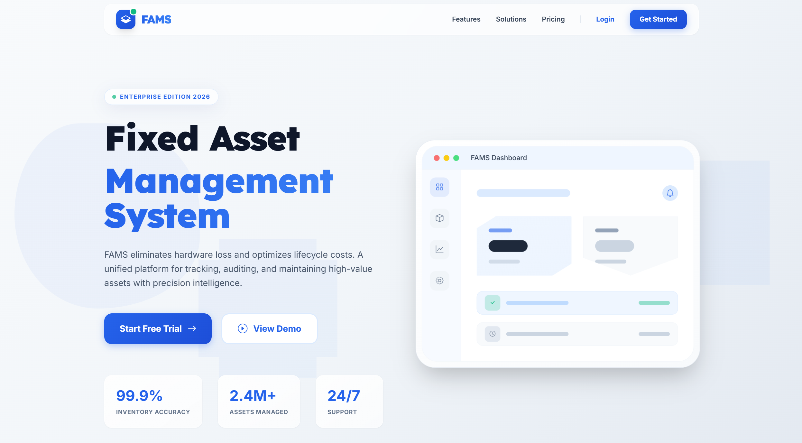
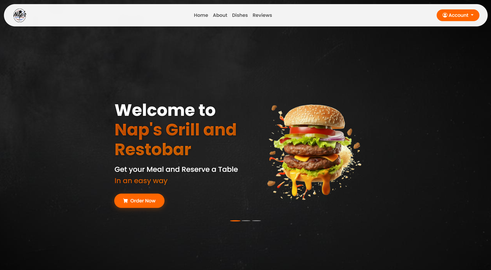
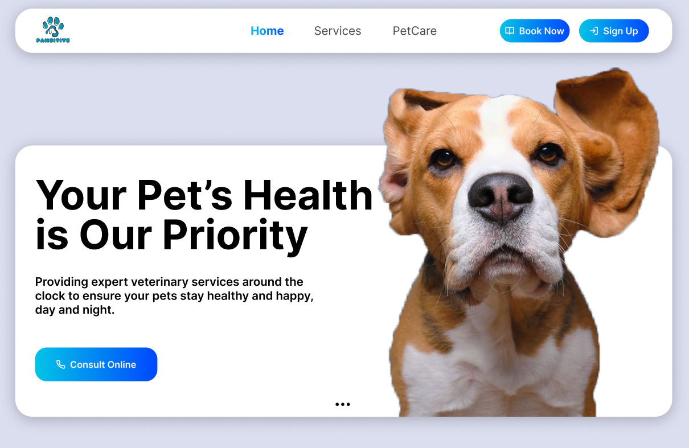
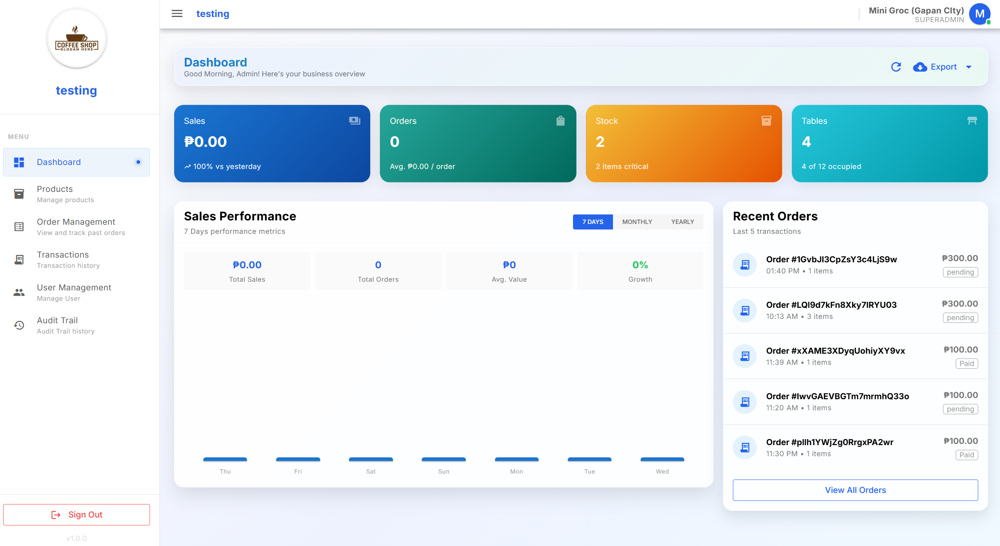
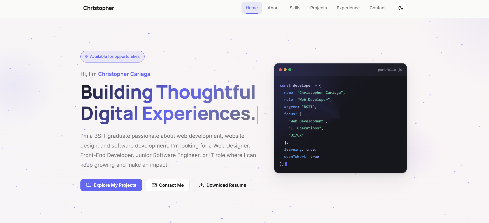

Available for full-time roles
Christopher Cariaga
Web Developer UI/UX Designer IT Graduate
I'm a BS Information Technology graduate who builds responsive, reliable web applications — from clean, accessible interfaces to the databases behind them. Looking for a web development or IT team where I can contribute from day one.
- Degree
- BS Information Technology
- Internship
- Symbol Science Inc.
- Certifications
- 5 credentials earned
const christopher = {
role: "Web Developer",
degree: "BS Information Technology",
stack: ["HTML", "CSS", "JavaScript", "PHP", "MySQL"],
focus: ["Web apps", "REST APIs", "IT support"],
learning: "every day",
openToWork: true
};01 — About
Curious about how things work, and how to make them better.
I'm an Information Technology graduate based in Lupao, Nueva Ecija. During my internship at Symbol Science Inc. I worked as a Junior Software Engineer Intern, helping build and maintain web systems — including the company's own website and a Fixed Asset Management System — while handling the troubleshooting and documentation that keep a project running.
Most of what I know comes from actually building things: web applications with HTML, CSS, JavaScript and PHP on top of MySQL databases. What I enjoy most is the problem-solving — figuring out why something breaks, then making it simpler for the person using it.
I'm now looking for my first full-time role in web development or IT, where I can learn from an experienced team and contribute work I'm genuinely proud of.
-
Front-end & back-end development
Building both the interface and the logic behind it.
-
Databases & REST API integration
Storing, retrieving and connecting data reliably.
-
Technical support & troubleshooting
Diagnosing hardware and software issues, then fixing them.
-
Teamwork & clear communication
Asking questions early and keeping work documented.
02 — Skills
Technologies & tools I work with
Grouped by how I actually use them — no inflated percentages, just the tools I have hands-on experience with.
Front-End Development
Back-End & APIs
Databases
Development Tools
IT Operations & Support
Productivity & collaboration
How I work
03 — Projects
Selected work
Systems and websites I built during my internship and studies. Source code for internal systems is private — reach out and I'll happily walk you through any of them.

FeaturedFull Stack Developer · Internship
Symbol Sciences Inc. Website
Corporate website for Symbol Sciences Inc., built to present the company's services and give visitors a clear, easy-to-navigate path to what they need.
- Led development of the site, strengthening the company's online presence and user engagement.
- Worked with cross-functional teams to define technical requirements and deliver a robust solution.

Front-End Developer · Internship
FAMS — Fixed Asset Management System
A system for tracking, managing and monitoring company assets, replacing manual tracking with a single organised record.
- Built user-friendly features that simplified asset management processes and improved operational efficiency.
- Used modern web development frameworks to create a dynamic, engaging interface.

Front-End Developer
DineHub — Restaurant Management System
A web-based restaurant management system designed to streamline daily operations, handle orders and improve service efficiency.
- Engineered a responsive user interface that improved customer interaction and satisfaction.
- Implemented modern HTML5, CSS3 and JavaScript to optimise performance and usability.

Back-End Developer
Pawsitive — Veterinary Appointment System
A web-based system for scheduling and managing veterinary appointments, keeping clinic bookings in one place.
- Designed and built scalable server-side logic to manage appointments.
- Integrated database solutions for efficient storage and retrieval, improving user accessibility.

Front-End Developer
Point-of-Sale (POS) System
A point-of-sale system for handling sales transactions and orders while keeping inventory counts up to date.
- Manages sales transactions and order processing in a single workflow.
- Tracks inventory to keep stock records accurate.

Full Stack Developer
Personal Portfolio Website
This site — hand-built with semantic HTML, modern CSS and vanilla JavaScript to present my work, skills and background.
- Dark and light themes, responsive layout, keyboard-friendly navigation.
- No frameworks or build step: just HTML, CSS and JavaScript.
04 — Experience & Education
Where I've learned and what I've earned
Internship · OJT
Junior Software Engineer Intern
Symbol Science Inc. · Philippines
- Contributed to the programming and development of web applications, supporting project efficiency and quality.
- Worked on the Fixed Asset Management System and the company website.
- Conducted computer troubleshooting to resolve technical issues, improving application reliability and performance.
Education
BS in Information Technology
PHINMA Araullo University · Maharlika, Cabanatuan City
- Focused on web development, databases and systems analysis.
- Built academic projects including the DineHub restaurant system and the Pawsitive veterinary appointment system.
Certifications
- TESDA · NC II Computer Systems Servicing
- AWS Academy Graduate — Cloud Developing
- AWS Academy Graduate — Cloud Architecting
- Oracle Academy Database Foundations
- Oracle Academy Oracle Analytics Cloud 2025 Certified Professional
05 — Contact
Let's build something together
I'm open to full-time roles, internships and freelance work in web development or IT. The fastest way to reach me is email.
Emailtophercariaga29@gmail.com
Phone+63 995 190 7403
LocationLupao, Nueva Ecija, Philippines
Download Resume (PDF)